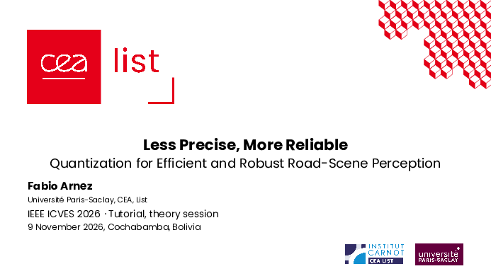
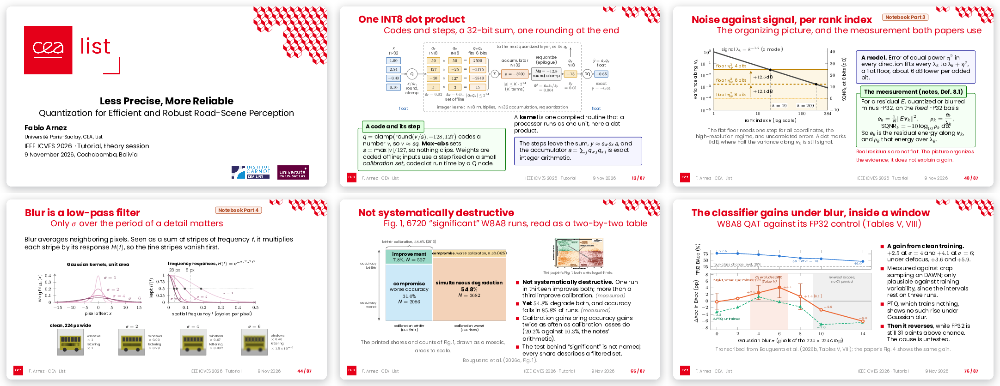
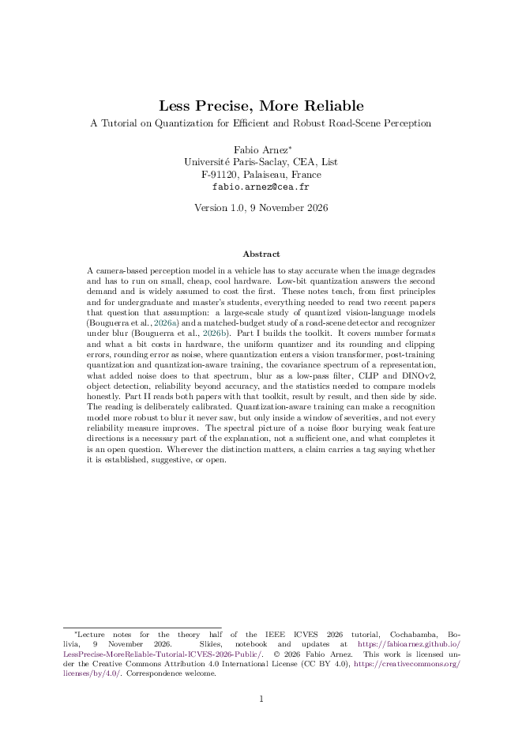
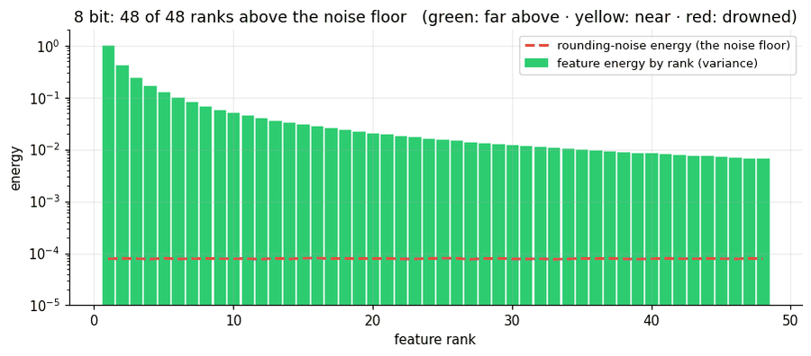
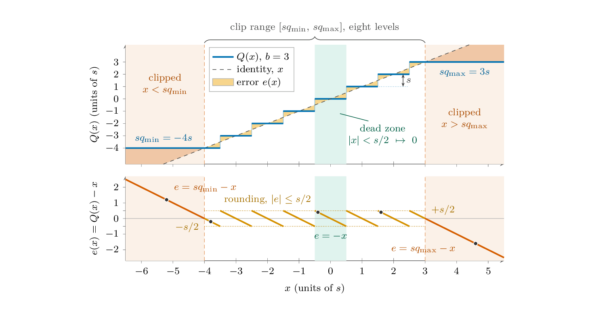
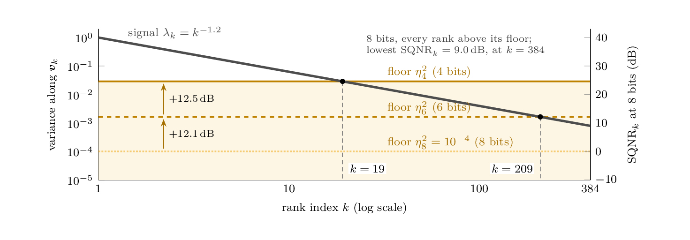
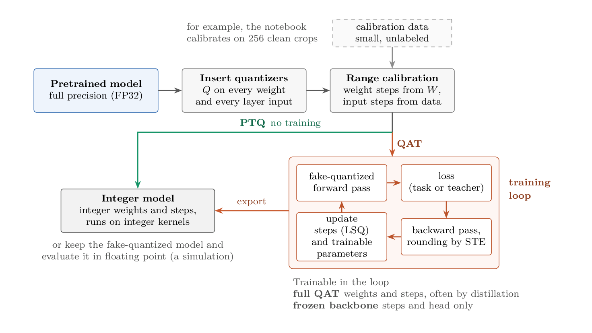
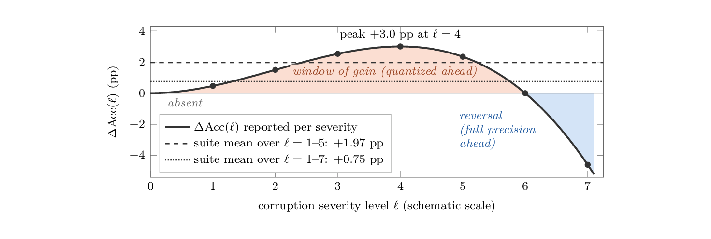

Slides
The deck of the theory session, about 90 slides in two parts, without the backup slides. Every number from the papers carries its locator.
- PDF, LaTeX Beamer
- CC BY 4.0
Quantization for Efficient and Robust Road-Scene Perception
Notebook also on nbviewer · GitHub · Download .ipynb

Overview
A camera-based perception model in a vehicle has to stay accurate when the image degrades, and it has to run on small, cheap, low-power hardware. Low-bit quantization answers the second demand and is widely assumed to cost the first. This tutorial teaches, from first principles, what you need to read two recent studies that question that assumption.
The first half builds the toolkit. It covers number formats and the integer kernel, the uniform quantizer and its errors, rounding error as noise, post-training quantization (PTQ) and quantization-aware training (QAT), the spectrum of a representation, blur as a low-pass filter, perception models, and the statistics needed for fair comparisons. It then reads a large-scale study of quantized vision-language models and a matched-budget study of road-scene perception under blur.
The second half is hands-on. A notebook builds the same idea with code and animations, then tests it on a DINOv2 vision transformer with road-object crops from the DAWN adverse-weather dataset.
The reading is calibrated. Under moderate blur, an 8-bit classifier trained through its quantizer was more accurate than its full-precision counterpart, but only inside a window of severities, and not every reliability measure improves. Quantization noise and blur act on the same weak feature directions, yet noise of the same size does not reproduce the gain, so what in the quantizer does the work is still an open question.
Materials

The deck of the theory session, about 90 slides in two parts, without the backup slides. Every number from the papers carries its locator.

The written companion, about 180 pages. Part I builds the toolkit, Part II reads both studies result by result, with exercises and worked examples.

Code and animations for the second half. Parts 1 to 4 run on a laptop CPU in seconds. Part 5 needs a GPU and takes about 10 to 12 minutes on a Colab T4.
Program
Key ideas




Papers
A large-scale study of quantized vision-language models, roughly 700,000 evaluation runs judged beyond accuracy, with a spectral account of when quantization helps.
Bouguerra, A., Montoya Vasquez, D. A., Gomez-Villa, A., Mraidha, C., & Arnez, F. (2026). In Proceedings of the 43rd International Conference on Machine Learning (Vol. 306). PMLR.
A matched-budget testbed on DAWN adverse-weather images. A detector and a classifier in FP32, W8A8 PTQ and W8A8 QAT, trained on clean images, with blur applied only at evaluation.
Bouguerra, A., Radermacher, A., Arnez, F., & Mraidha, C. (2026). In Proceedings of the 2026 IEEE International Conference on Vehicular Electronics and Safety (ICVES). IEEE. To appear.
Cite
If you use the material, please cite the tutorial, and the two studies for their results.
@misc{arnez2026lessprecise,
author = {Arnez, Fabio},
title = {Less Precise, More Reliable: Quantization for Efficient
and Robust Road-Scene Perception},
howpublished = {Tutorial at the IEEE International Conference on
Vehicular Electronics and Safety (ICVES)},
address = {Cochabamba, Bolivia},
month = nov,
year = {2026},
url = {https://fabioarnez.github.io/LessPrecise-MoreReliable-Tutorial-ICVES-2026-Public/}
}